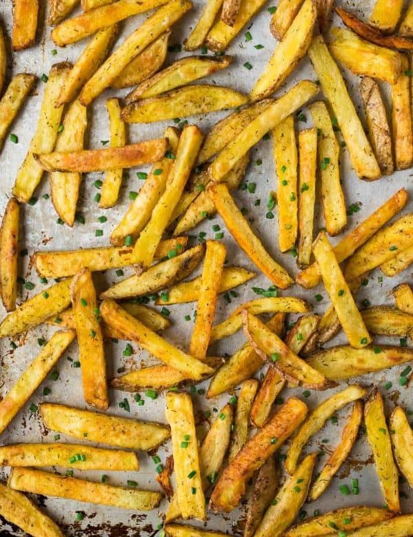

French Fries

You can make crispy Baked French Fries in the oven!
3 tbspextra-virgin olive oil divided1½ poundsgolden yellow potatoes Yukon Gold or similar, about 41 tspkosher salt plus additional to taste1 tspgarlic powder½ tspdill weed¼ tsponion powder¼ tspground black pepper- Toppings (optional) fresh parsley, chives, freshly grated Parmesan cheese
Place a rack in the lower third of your oven and preheat to 450 degrees F. Drizzle a large rimmed baking sheet with 1½ tablespoons olive oil, brushing it as needed so that it nicely coats the pan.
Scrub the potatoes and peel if desired (I leave the peels on). Slice into ¼-inch-wide sticks. Place the potatoes in a large bowl, then pour very hot tap water over the top so that it covers the potatoes by at least 1 inch. Let sit 10 minutes.
Drain the potatoes, then transfer them to a clean towel and dry as completely as you can, changing the towel as needed. Rinse and wipe out the bowl you soaked the potatoes in, then return the potatoes to the bowl. Drizzle with the remaining 1½ tablespoons olive oil and sprinkle with salt, garlic powder, dill weed, onion powder, and pepper. Toss to coat, making sure the spices and oil are well distributed. Spread the potatoes into a single layer on the prepared baking sheet.
Roast in the lower third of the oven for 15 to 20 minutes, until turning golden underneath. Remove the baking sheet from the oven and, with a large, firm spatula, carefully loosen the fries from the bottom of the pan. Flip them in large sections as best as you can so that the potatoes rotate and brown evenly on all sides (no need to painstakingly flip every single one). With your fingers (be careful—the pan is hot!) return the potatoes to a single layer. Place the pan back in the oven and continue baking until the fries are as golden and crisp as you like, about 5 to 10 additional minutes (30 minutes total was ideal timing for this crispy-fry lover). While the fries are hot, sprinkle with any desired toppings and a bit more salt to taste. DEVOUR.